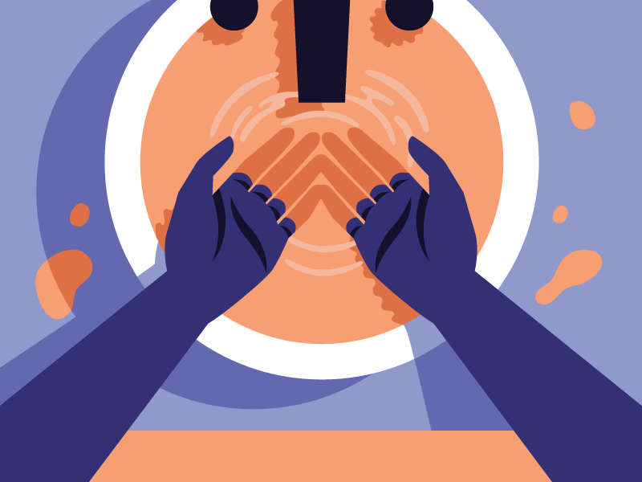

Take Care Of Yourself
&
Stay Indoors

Care Tips For You
Here's How You Can Keep Safe
1. Wash Your Hands :
- Wash Your Hands With Soap For Atleast 20 seconds
- If You are not near a soap,Use Hand Sanitizer
- Wash Your Hands Very Often
2. Wear A Mask
- Use an approved mask
- Avoid Using DIY masks that are not medically proven
to prevent viruses
- Don't Buy One If You Don't Really Need It
(Think Of All the People who do)